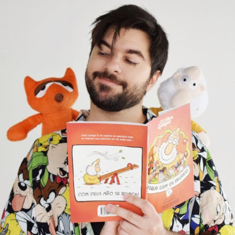

Carlos Ruas, nascido no estado do Rio de Janeiro, em Niterói, é um quadrinista que se destacou no Brasil com a criação dos projetos “Um sábado Qualquer”, “Cães e Gatos”, “Mundo Avesso”, dentre outras obras de sucesso, todos esses universos retratados de forma distinta, com humor e um pouco de sarcasmo.
Desde cedo, Carlos Ruas demonstrou talento e gosto pela arte, mais especificamente nos quadrinhos, é graduado em Design Gráfico e iniciou sua carreira em uma produtora cultural, ao mesmo tempo que colocava em prática nas redes sociais e em formato de blog, o projeto que um dia se tornaria o que hoje é o “Um Sábado Qualquer”.
As tirinhas fazem sucesso por abordarem assuntos ligados a religião de maneira leve e com humor, sem deixar de lado uma pitada de ironia, fazendo com o que, o mais diversificado público aprecie as piadas e reflita acerca dos temas abordados pelo autor.
Ruas, tem atualmente sete livros publicados, sendo eles por editoras e por meio de financiamento coletivo, ademais dos livros e dos produtos divulgados online, Carlos Ruas conta também com uma loja online, onde comercializa produtos e pelúcias com os temas de suas obras.
As animações de suas tirinhas vieram em 2014, quando o autor iniciou um canal no YouTube, que atualmente conta com mais de 426 mil inscritos, no canal não se fala apenas do “Um Sábado Qualquer”, mas também de outras obras em formato de animação como o “Mundo Avesso”, que traz consigo a filosofia visual e reflexões acerca de valores, virtudes, ações dentre outros.
Eventos Geek como por exemplo, a Bienal do Livro, Comic Con que acontecem na cidade de São Paulo, trazem Carlos Ruas como seu convidado, para apresentar as obras a novos e antigos fãs, dar autógrafos e tirar fotos, mas o autor é amplamente conhecido em todo o país, graças a sua presença muito popular nas redes sociais.
Carlos Ruas foi ganhador do troféu HQMix (equivalente ao “Oscar” dos quadrinhos brasileiros) na categoria de Webtiras no ano de 2012, e em 2015, o autor conquistou o 32° Troféu Angelo Agostini com o livro “Êxodo: nos bastidores da bíblia”.

Carlos Ruas
Nas redes sociais, “Um Sábado Qualquer” é um sucesso, no Twitter o autor conta com 60 mil seguidores, no Facebook são 2,7 milhões de fãs e, por fim, no Instagram o autor conta com 663 mil seguidores.
Sendo assim, Carlos Ruas, sem dúvida, é um dos quadrinistas de maior sucesso no Brasil, consolidado no mercado literário e nas redes sociais.